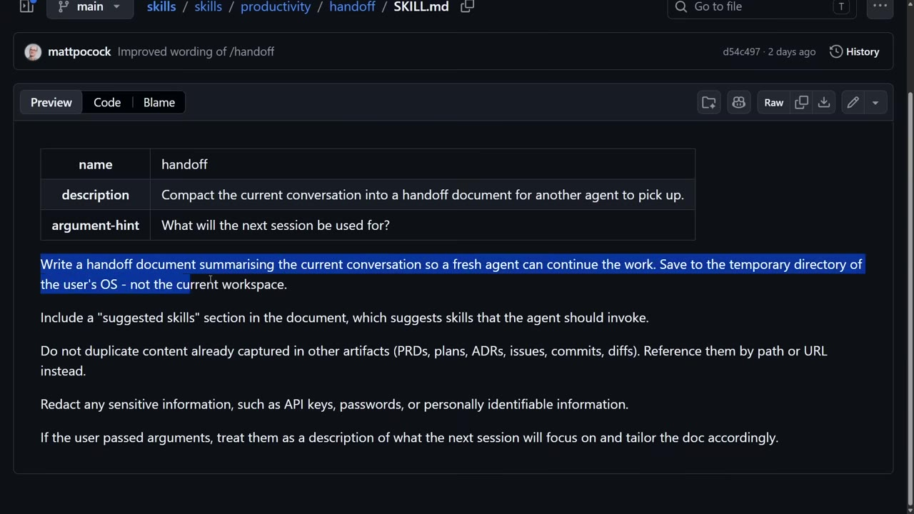
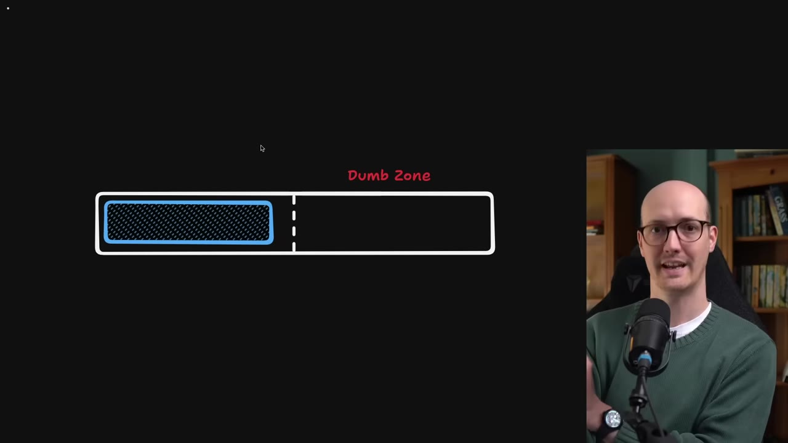
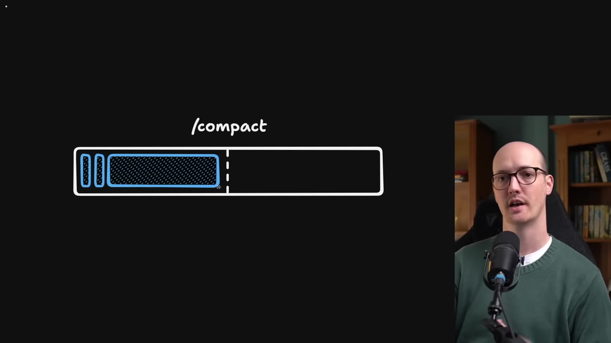
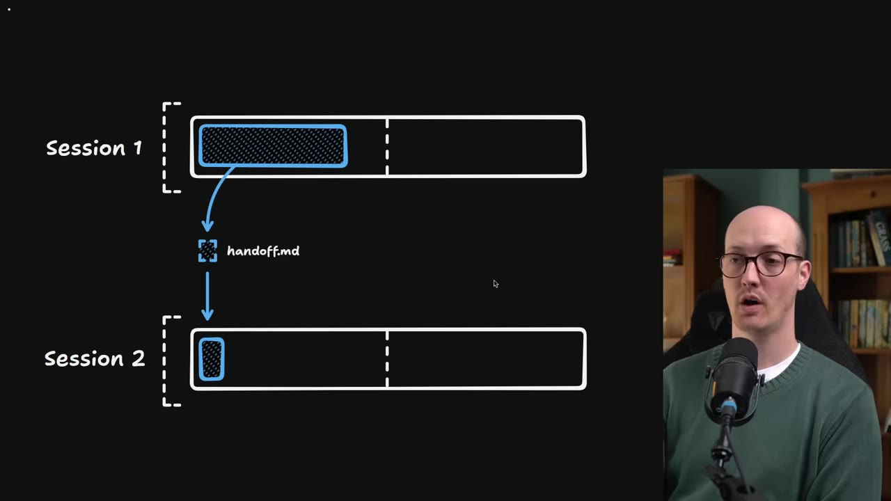
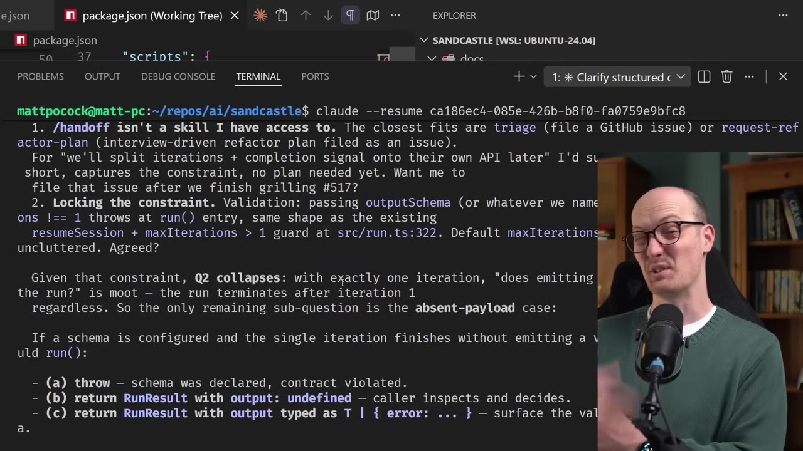
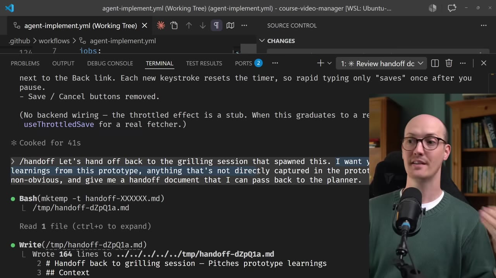
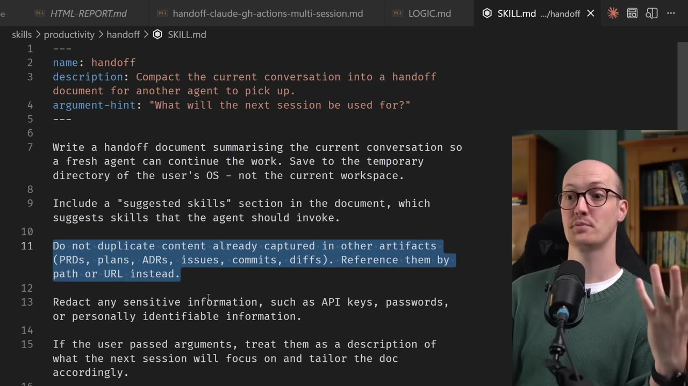

A handoff skill takes a slice of one agent session, compresses it into a disposable markdown file, and passes it to a fresh session — so you keep the original conversation pure instead of clobbering it with /compact.
Watch on YouTubePocock noticed himself doing something clever with agents that felt too trivial to package — then shipped it as a skill anyway, under skills / productivity / handoff, to see how often he'd reach for it. He reached for it a lot. The whole thing is a few lines of markdown: write a handoff document summarising the current conversation so a fresh agent can continue the work, and save it to the OS temp directory, not the workspace.

handoff SKILL.md — description, an argument hint asking what the next session is for, and five short rules. The skills repo it lives in is approaching 100,000 stars.00:00:46I'm constantly thinking about how to package my instincts and coding practices into reusable skills.— Matt Pocock
Every tool call, file edit, and reply fills the context window. Claude Code advertises a million tokens, but early tokens get better answers — fewer tokens mean fewer attention relationships, so the agent's focus isn't diffuse. As the conversation grows, responses get dumber. Pocock says he's never reached 800k; he starts feeling the dumb zone around the 120k mark.

The built-in answer to the dumb zone is /compact: summarise the long conversation and drop it back near the start of the window. There's often an auto-compact buffer that fires automatically near the end. The summary is usually a list of referenced files, what you said, and the general tone — pasted in as a nugget at the top of the new session. Keep compacting and you build up sediment: layers of previous conversations stacked inside the window.

The thing compact can't do: spin off a side task without contaminating the current thread. Say you spot a refactor that's out of scope. Extending the session dilutes it and pushes you into the dumb zone; compacting clobbers the progress you've made. What you actually want is to take just the slice that pertains to that side task, hand it to another session, and let the two run independently.

handoff.md carries one slice down into Session 2. The two then run on their own.00:05:58Take just the slice that pertains to this extra bug fix, hand it off to another session, and then these two could just run independently.— Matt Pocock
Pocock most often uses handoff while "grilling" — a session where the agent interrogates him to plan features, here for his software factory Sandcastle. Only two questions in, he notes that iterations and the completion signal might belong on a separate API, and hands that off. The move sharpens the current session too: declaring the side task out of scope collapses the question he was stuck on. The handoff file becomes the focus for a later session — file a GitHub issue, then eventually design the split.

Grilling surfaces two kinds of questions: known unknowns the agent can just ask about, and things you need to see — a UI prototype, a tricky bit of logic. So Pocock hands off from the grill to a prototype branch (the window communication, the tldraw SDK integration). That prototype session ballooned to 169k tokens — far bigger than would have fit in the grill. Then he hands the learnings back: take anything non-obvious not captured in the prototype itself and give the planner a handoff document.

The rest of the skill is reasoning, not magic. A "suggested skills" section lets the new session auto-invoke what it needs (grill with docs, diagnose, prototype) so you don't have to remember. "Don't duplicate content" keeps the files from bloating — point at PRDs and issues by path or URL instead. Save to the OS temp directory because these files are disposable, not documentation to rot in your repo. Redact API keys, passwords, and PII. And because it's just markdown — not native agent state — the first session can be Claude Code and the next can be Codex or Copilot CLI, which makes adversarial cross-agent review trivial.

These handoff files are disposable. They are not something to be kept around for a long time to rot in your codebase as documentation.— Matt Pocock